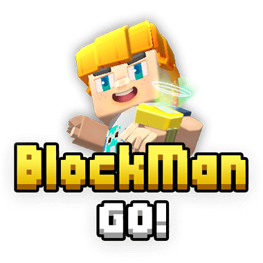
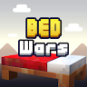
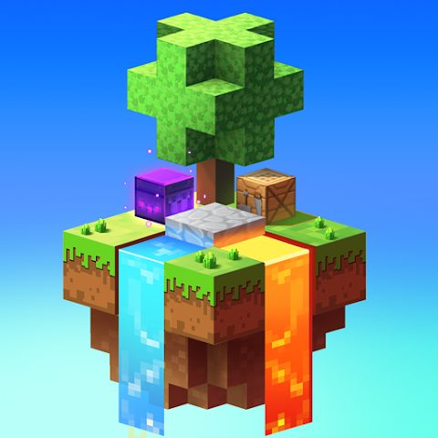
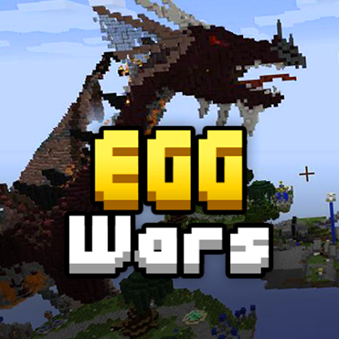

Adventure
Dive into the many minigames the game offers!
Invite friends, play online, and connect with people you like!
Create new experiences and new friendships.

A sandbox game that combines several minigames into one.
It mixes elements of Minecraft and Roblox.
Dive into the many minigames the game offers!
Invite friends, play online, and connect with people you like!
Create new experiences and new friendships.
Play the games that suit you the most.
Building, Combat/Battle/PVP, Parkour, Survival, Strategy,
Competition, Role-Play, Racing, FPS and much more...

Bed Wars is a Combat, Strategy and Team minigame where your objective is to destroy the enemy team’s beds and be the last survivor along with your team. The minigame uses runes and superpowers as its core mechanics, making it harder especially for beginners.

Sky Block is a building minigame with additional Battle modes combined with Strategy themes. You start on an island and your objective is to gather resources through trades or events. With those resources, you can buy or exchange items.

Egg Wars is a Battle minigame with the same theme as Bed Wars. The game is divided into 4 teams with 4 players each, totaling 16 players per match. Your objective is to protect your egg and destroy the enemy teams' eggs. The team that survives until the end wins.
BlockMan Go is a game that brings several minigames together in one, such as Bed Wars, Egg Wars, Sky Block, Hide and Seek, Murder Mystery 2, and more...
Yes! BlockMan Go is completely free and you can download it from the Google Play Store or the App Store.
Currently, BlockMan Go does not offer support for desktop platforms, but you can easily play it using an emulator such as BlueStacks or LDPlayer.
BlockMan Go has paid currencies called Gcubes. You can buy them in the store starting from R$4.99. They are used to customize your skin or buy items in minigames.
Yes! You can customize your own minigame (like Bed Wars, Egg Wars or Murder Mystery - but without copying them) using the BlockMan Editor. You can also create your own world in the Lounge area. It already comes with several worlds for you to customize with pre-built elements. Therefore, this won’t be considered a minigame, but a world with a player limit.
Yes, and that’s what makes BlockMan Go such a special game. You can play with your friends in any minigame. You can have up to 500 friends, which is more than enough. Don’t forget you can also make new friends!
As soon as you create your account, you receive a unique ID that only you have. This ID is very important, as it can be used to add friends or recover your account. IDs are created in intervals of 16. For example, the first person to join the game received ID 16, the second got ID 32, the third got ID 48, and so on... So there are two ways to identify a player: by name or by ID.
Customizing your account helps attract more people to get to know you. A friendly and appealing profile is great for making new friends. You don’t need to enter personal information. In the account area, there are four customization options: Your username, your description, your profile picture, and your birthday. Once again: You don’t need (and shouldn’t) provide personal information.
In the username, you can insert any name that represents you. In the description area, you must write a brief statement about anything, with a limit of 80 characters. You can ask questions, say something about yourself, share your thoughts about the game, introduce yourself, etc... There are many possibilities. Examples of descriptions:
Hello, my name is Miguel and I love playing Egg Wars!
Join my clan! We are recruiting members!
Hey! Add me! Let’s be friends!
Your profile picture can be anything you like — from anime to objects or characters — it’s up to you!
The birthday date doesn’t need to be your real birthday. It could be a special date, an important event, or even the day you joined the game! This way, you’ll always remember when your journey began.
Now, regarding security, it’s highly recommended to set a password to guarantee minimum security. There are also other login methods such as Google, Facebook, email and Security Questions. By filling all these login methods, your account will be much safer.
To recover your account, you must have at least your password set and one login method enabled. You can recover it by going to Settings > Switch account > Forgot password > (enter your ID), and you’ll have two options: Security Questions or Email Code.
If you don’t have Security Questions or an Email linked, go to Settings > Switch account > and choose another authentication method like Google or Facebook.
If none of the options work, you can ask for help via the Official BlockMan Go Email.